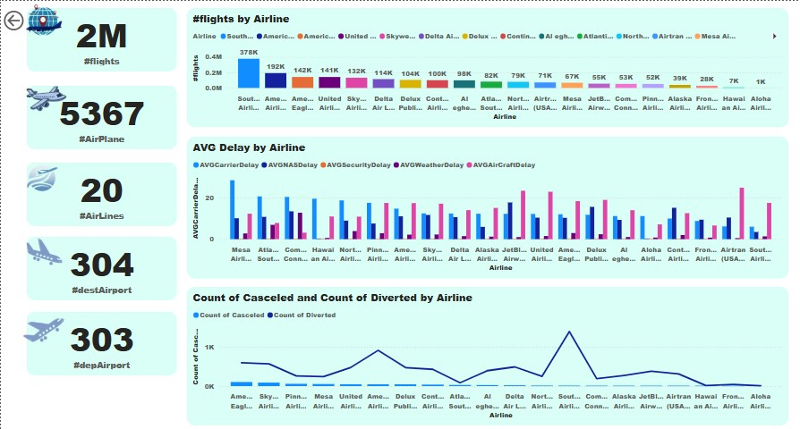
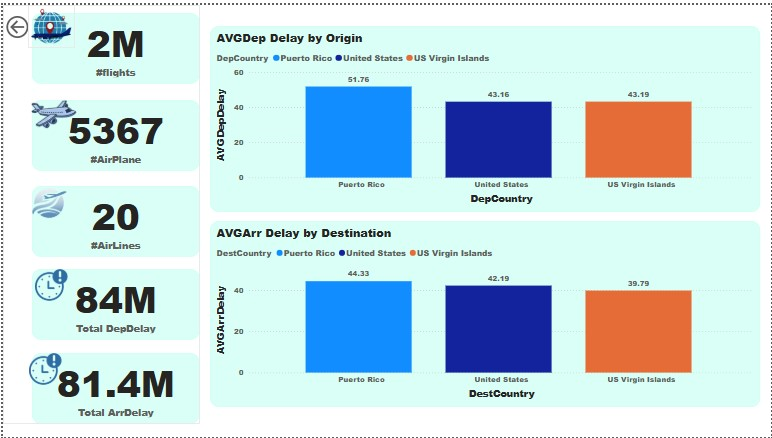
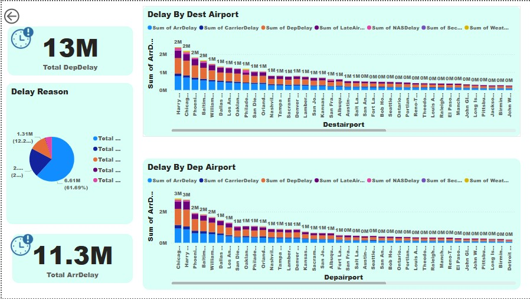
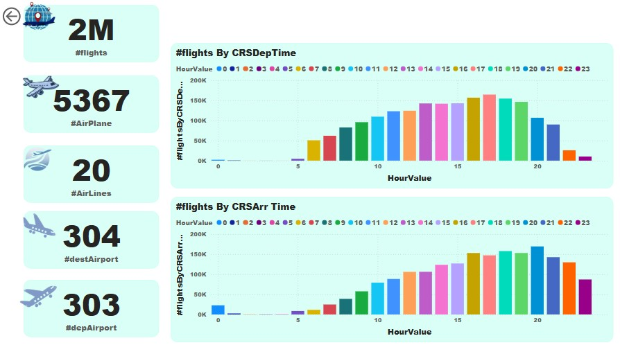
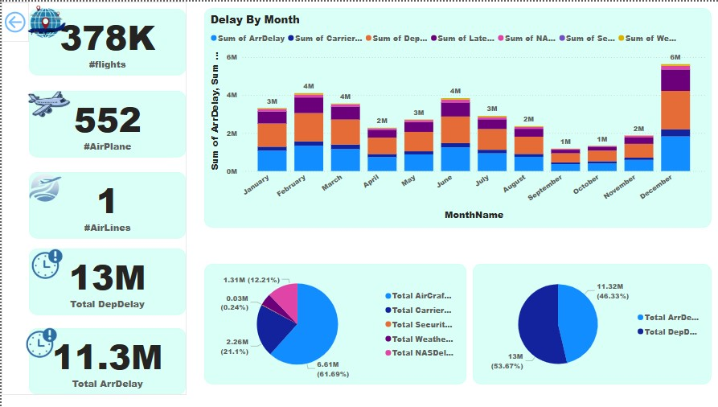
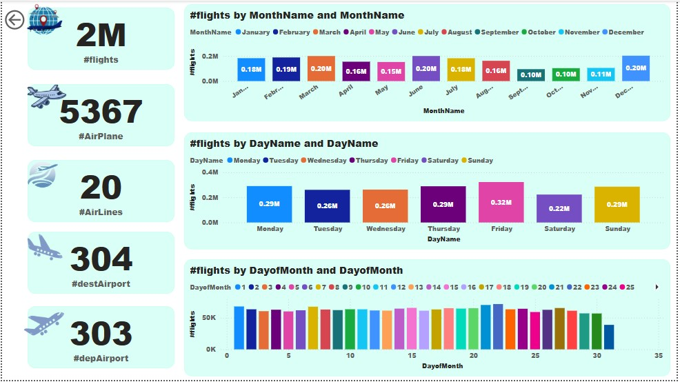
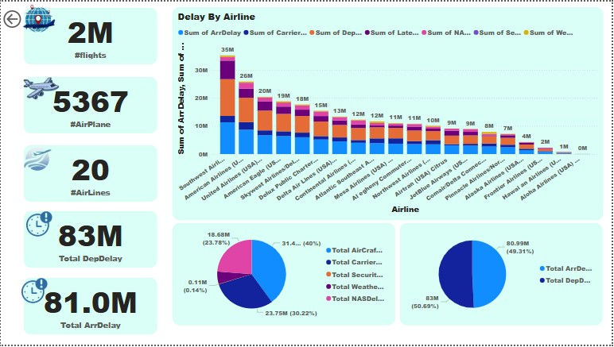

Project Overview
This Power BI dashboard provides an in-depth analysis of flight delays, examining patterns, causes, and actionable insights that can guide improvements in airline operations and customer satisfaction. The project combines Excel data cleaning with Power BI visualization to create a comprehensive view of flight delay dynamics.
The dashboard enables stakeholders to:
- Identify patterns and trends in flight delays
- Analyze delay causes across different airlines and airports
- Monitor cancellation and diversion rates
- Optimize scheduling based on peak delay periods
Key Features & Analysis
-
Airline Performance
Tracking delay metrics across different airlines to identify operational strengths and weaknesses.
-
Airport Analysis
Identifying key hubs and high-impact airports prone to delays, with Puerto Rico showing the longest average delays.
-
Delay Causes
Categorizing delays by reason (40% from late arrivals, 30% carrier delays) to target improvement areas.
-
Temporal Patterns
Revealing peak delay times (1PM-7PM) and seasonal trends (December peaks) for resource planning.
-
Operational Disruptions
Analyzing canceled and diverted flights to understand broader operational challenges.
Technical Implementation
The dashboard was built with:
- Excel for data cleaning and preparation
- Power BI data modeling connecting flight, airline, and airport tables
- DAX measures for calculating delay metrics and performance indicators
- USERELATIONSHIP for complex multi-dimensional analysis
- Interactive filters for dynamic airport and airline comparisons






